Авторы и лицензии
Все фото взяты с Wikimedia Commons и распространяются по указанным лицензиям. Изображения обрезаны по лицу и пережаты в WebP; обработанные версии распространяются на тех же условиях, что и оригиналы. Нажмите на название файла, чтобы открыть его страницу с полной информацией.
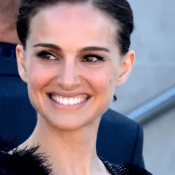 | Натали Портман | Natalie Portman Cannes 2015 4.jpg | Georges Biard | CC BY-SA 3.0 |
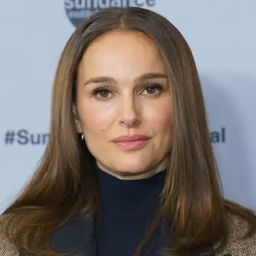 | Натали Портман | NataliePortman.jpg | Colleen Sturtevant | CC BY 4.0 |
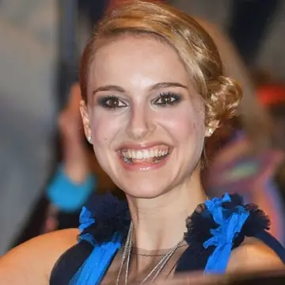 | Натали Портман | Natalie Portman Berlin 2008.jpg | Siebbi | CC BY-SA 3.0 |
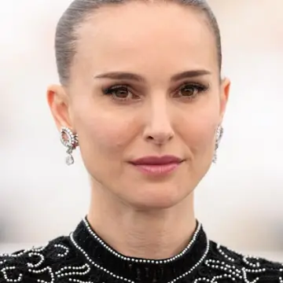 | Натали Портман | MKr380590 Natalie Portman (Arco, Cannes 2025).jpg | Martin Kraft | CC BY-SA 4.0 |
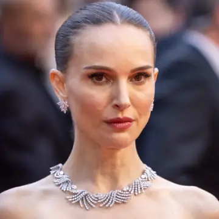 | Натали Портман | Natalie Portman-4339 (cropped).jpg | Harald Krichel | CC BY-SA 4.0 |
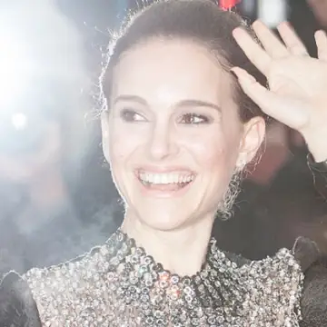 | Натали Портман | Natalie Portman Berlin 2015 02 (cropped).jpg | Siebbi | CC BY-SA 3.0 |
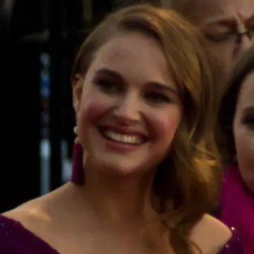 | Натали Портман | Natalie Portman (2011 Academy Awards) 03 (cropped).jpg | David Torcivia | CC BY-SA 2.0 |
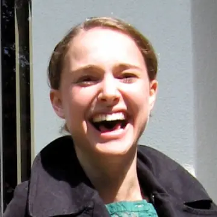 | Натали Портман | Natalie Portman laughing.jpg | Steve Jurvetson from Menlo Park, USA | CC BY 2.0 |
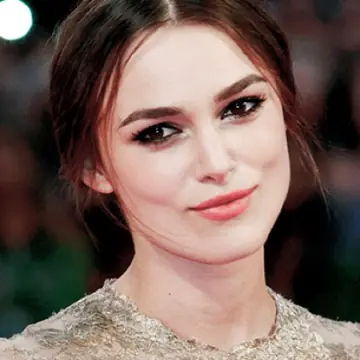 | Кира Найтли | KeiraKnightleyByAndreaRaffin2011 (cropped).jpg | Andrea Raffin | CC BY-SA 3.0 |
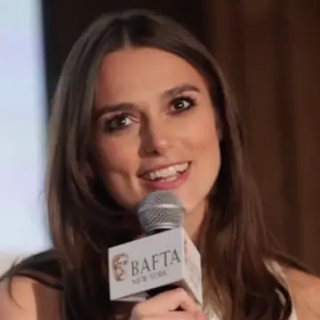 | Кира Найтли | Knightley Bafta 2015 07.png | The Standard | CC BY-SA 3.0 |
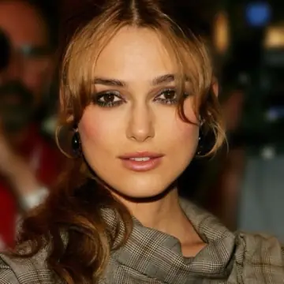 | Кира Найтли | Keira Knightley 2005 (cropped).jpg | photo: Tony Shek,retouch: Patrol110 | CC BY 2.0 |
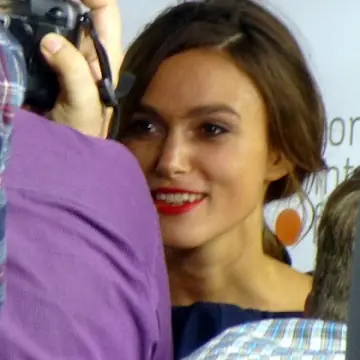 | Кира Найтли | Laggies 04 (15231869672) (2).jpg | GabboT | CC BY-SA 2.0 |
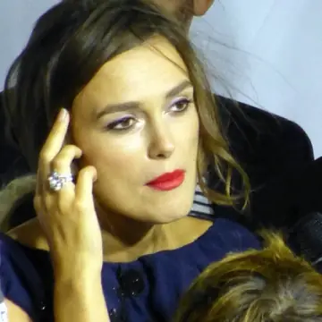 | Кира Найтли | Laggies 05 (15209228036) (2).jpg | GabboT | CC BY-SA 2.0 |
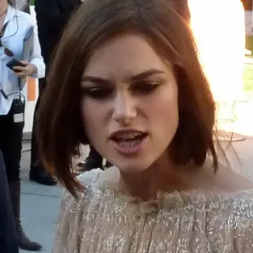 | Кира Найтли | Dangerous Method 15 (6929253163).jpg | GabboT | CC BY-SA 2.0 |
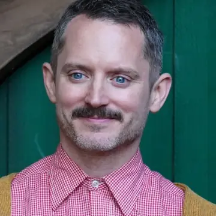 | Элайджа Вуд | Elijah Wood (55223197178) (cropped).jpg | Miguel Discart & Kiri Karma | CC BY-SA 4.0 |
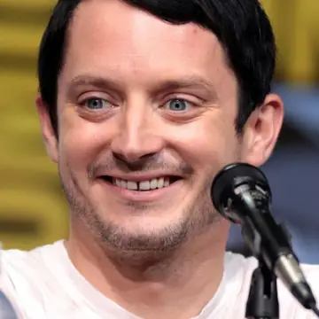 | Элайджа Вуд | Elijah Wood by Gage Skidmore 2.jpg | Gage Skidmore | CC BY-SA 3.0 |
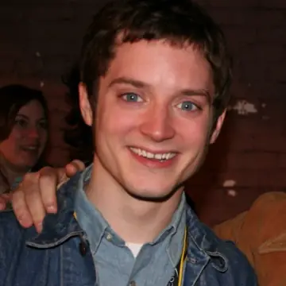 | Элайджа Вуд | Elijah Wood 2.jpg | Jason and Jane Upshaw | CC BY-SA 2.0 |
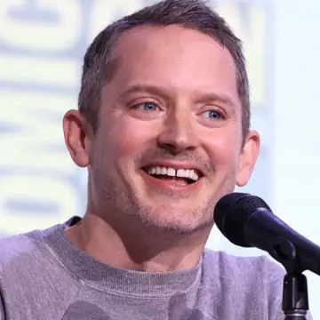 | Элайджа Вуд | Elijah Wood by Gage Skidmore 3.jpg | Gage Skidmore | CC BY-SA 3.0 |
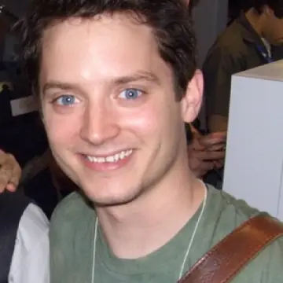 | Элайджа Вуд | Elijah Wood (2).jpg | dAb | CC BY-SA 2.0 |
| Элайджа Вуд | Elijah Wood (15401169398).jpg | Ian Aberle | CC BY-SA 2.0 | |
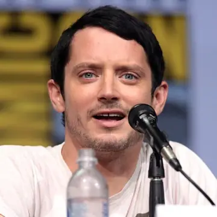 | Элайджа Вуд | Elijah Wood (35875614920).jpg | Gage Skidmore from Peoria, AZ, United States of America | CC BY-SA 2.0 |
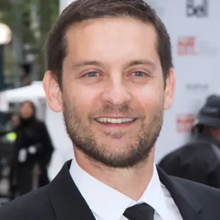 | Тоби Магуайр | Tobey Maguire 2014.jpg | gdcgraphics | CC BY-SA 2.0 |
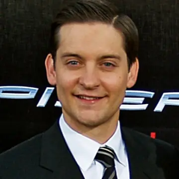 | Тоби Магуайр | Tobey Maguire 2007 Shankbone.jpg | David Shankbone | CC BY 3.0 |
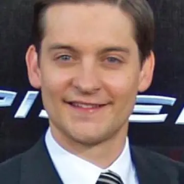 | Тоби Магуайр | Tobey Maguire by David Shankbone crop.jpg | David Shankbone | CC BY-SA 3.0 |
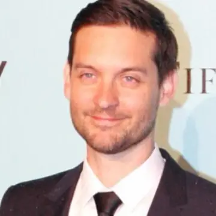 | Тоби Магуайр | Tobey Maguire (8778332185).jpg | Eva Rinaldi | CC BY-SA 2.0 |
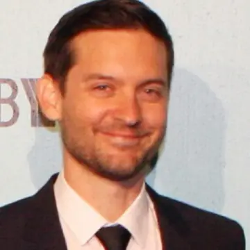 | Тоби Магуайр | Tobey Maguire (8778329801).jpg | Eva Rinaldi | CC BY-SA 2.0 |
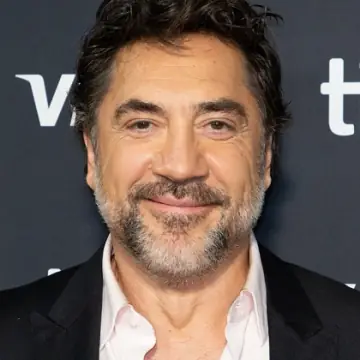 | Хавьер Бардем | Javier Bardem - Bunker - TIFF 2026-12.jpg | Sarran Hamilton | CC BY-SA 4.0 |
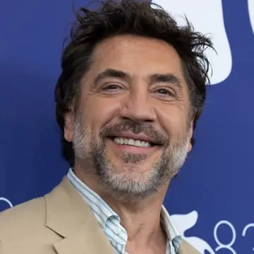 | Хавьер Бардем | Javier Bardem at the 83rd Venice International Film Festival.jpg | LucaFazPhoto | CC BY-SA 4.0 |
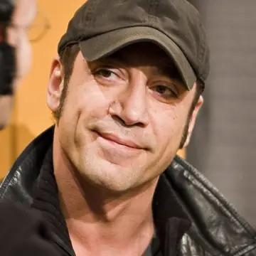 | Хавьер Бардем | Javier Bardem (Berlin Film Festival 2007).jpg | Siebbi | CC BY 3.0 |
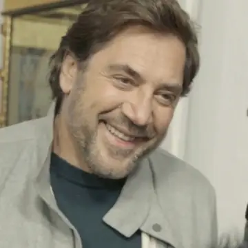 | Хавьер Бардем | Javier Bardem during an interview, March 2022 (3) (cropped).jpg | Lyn Fairly Media | CC BY 3.0 |
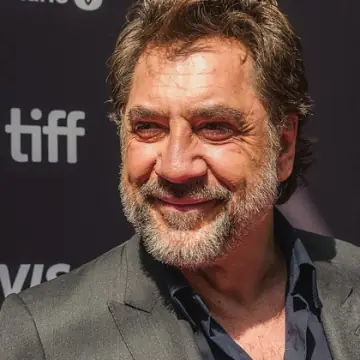 | Хавьер Бардем | Javier Bardem at TIFF 2026 05.jpg | Marlene Landu | CC BY-SA 4.0 |
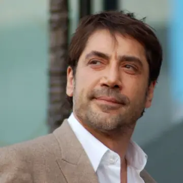 | Хавьер Бардем | JavierBardemHWOFNov2012.jpg | Angela George | CC BY-SA 3.0 |
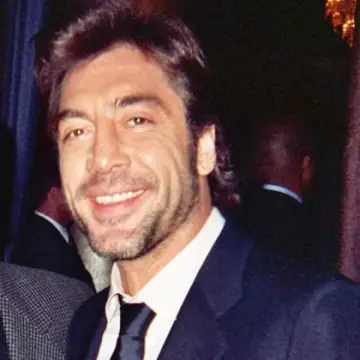 | Хавьер Бардем | Javier Bardem.jpg | Greg in Hollywood (Greg Hernandez) | CC BY 2.0 |
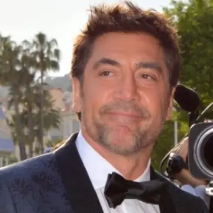 | Хавьер Бардем | Javier Bardem Cannes 2018 2.jpg | Georges Biard | CC BY-SA 4.0 |
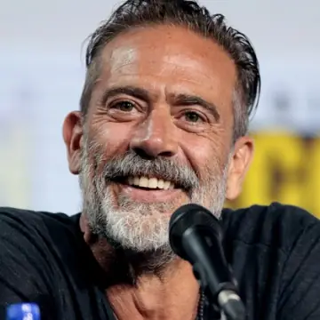 | Джеффри Дин Морган | Jeffrey Dean Morgan by Gage Skidmore 3.jpg | Gage Skidmore | CC BY-SA 3.0 |
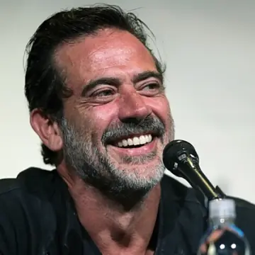 | Джеффри Дин Морган | Jeffrey Dean Morgan (28291848150).jpg | Gage Skidmore from Peoria, AZ, United States of America | CC BY-SA 2.0 |
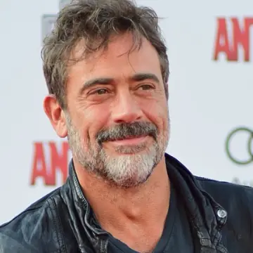 | Джеффри Дин Морган | Jeffrey Dean Morgan at the World Premiere of Marvel's Ant-Man -AntMan -AntManPremiere - DSC 0194 (19114459100).jpg | Red Carpet Report on Mingle Media TV from Culver City, USA | CC BY-SA 2.0 |
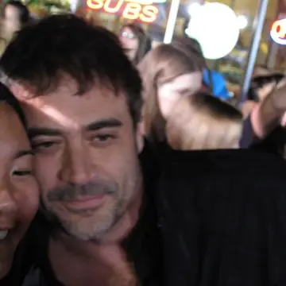 | Джеффри Дин Морган | JeffreyDeanMorgan2008.jpg | http://fruitycocktails.livejournal.com/ | CC BY-SA 3.0 |
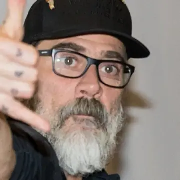 | Джеффри Дин Морган | Jeffrey Dean Morgan - 2018076114324 2018-03-17 Walker Stalker Con - Sven - 1D X MK II - 0336 - AK8I7992.jpg | Sven Mandel | CC BY-SA 4.0 |
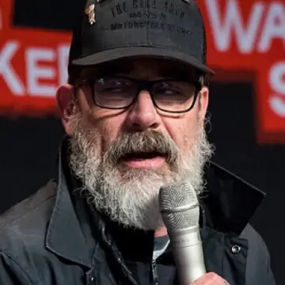 | Джеффри Дин Морган | Jeffrey Dean Morgan - 2018077111749 2018-03-18 Walker Stalker Con - Sven - 1D X MK II - 138 - AK8I9179.jpg | Sven Mandel | CC BY-SA 4.0 |
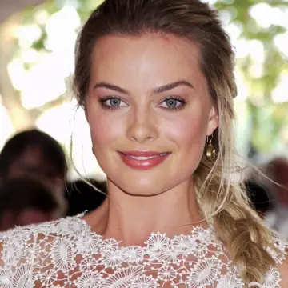 | Марго Робби | Margot Robbie at Somerset House in 2013 (cropped).jpg | P. Lovell | CC BY-SA 2.0 |
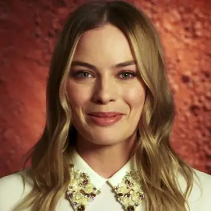 | Марго Робби | Margot Robbie Oxfam 2016.jpg | OxfamAustralia (https://www.youtube.com/channel/UCK5Qv6SoslwyU3cCoTEU7WA) | CC BY 3.0 |
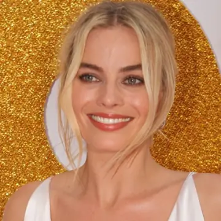 | Марго Робби | SYDNEY, AUSTRALIA - JANUARY 23 Margot Robbie arrives at the Australian Premiere of 'I, Tonya' on January 23, 2018 in Sydney, Australia (28074883999) (cropped).jpg | Eva Rinaldi from Sydney Australia | CC BY-SA 2.0 |
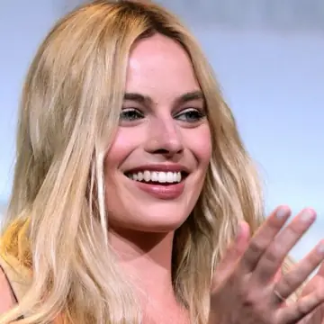 | Марго Робби | Margot Robbie (28601016915) (cropped 3).jpg | Gage Skidmore from Peoria, AZ, United States of America | CC BY-SA 2.0 |
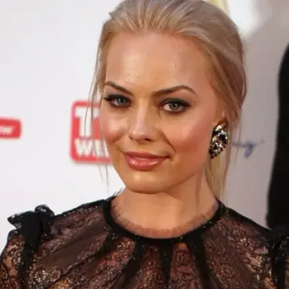 | Марго Робби | Margot Robbie (cropped).jpg | Eva Rinaldi | CC BY-SA 2.0 |
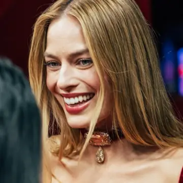 | Марго Робби | Margot Robbie Wuthering Heights premiere.jpg | Ondine Goat | CC0 |
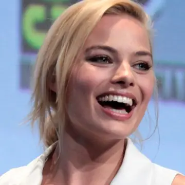 | Марго Робби | Margot Robbie by Gage Skidmore (cropped).jpg | Gage Skidmore | CC BY-SA 3.0 |
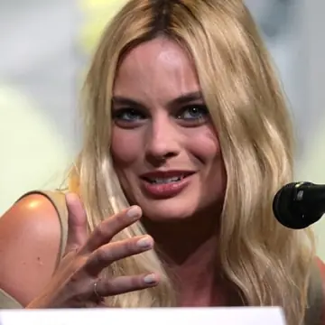 | Марго Робби | Margot Robbie (28494170252).jpg | Gage Skidmore from Peoria, AZ, United States of America | CC BY-SA 2.0 |
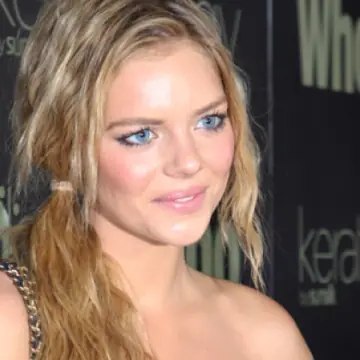 | Самара Уивинг | Samara Weaving 8.jpg | {{{1}}} | CC BY-SA 2.0 |
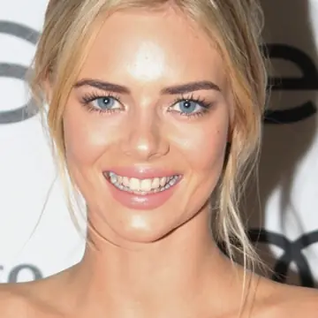 | Самара Уивинг | Samara Weaving 2015 (cropped).jpg | Eva Rinaldi | CC BY-SA 2.0 |
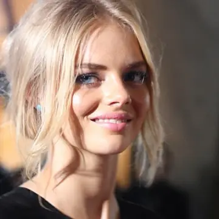 | Самара Уивинг | Samara Weaving 10.jpg | Eva Rinaldi | CC BY-SA 2.0 |
| Самара Уивинг | Samara Weaving (cropped).jpg | Eva Rinaldi | CC BY-SA 2.0 | |
| Самара Уивинг | Samara Weaving (8192034552).jpg | Eva Rinaldi | CC BY-SA 2.0 | |
| Самара Уивинг | Samara Weaving 11.jpg | Eva Rinaldi | CC BY-SA 2.0 | |
| Самара Уивинг | Samara Weaving 2.jpg | Eva Rinaldi | CC BY-SA 2.0 | |
| Самара Уивинг | Samara Weaving Red Balloon - shot by Jordan Kirk.jpg | Jordan Kirk and Jordan Dorso | CC BY-SA 4.0 | |
| Джессика Честейн | Jessica Chastain-64424 (cropped).jpg | Harald Krichel | CC BY-SA 4.0 | |
| Джессика Честейн | Jessica Chastain Cannes 2012 2.jpg | Georges Biard | CC BY-SA 3.0 | |
| Джессика Честейн | Jessica Chastain Cannes 2016 3.jpg | Georges Biard | CC BY-SA 3.0 | |
| Джессика Честейн | Jessica Chastain - MVff2010 (5375615013).jpg | https://www.flickr.com/photos/johndavidflores/ | CC BY 2.0 | |
| Джессика Честейн | Jessica Chastain-64631.jpg | Harald Krichel | CC BY-SA 4.0 | |
| Джессика Честейн | Cannes 122 (28038348041).jpg | GabboT | CC BY-SA 2.0 | |
| Джессика Честейн | Jessica Chastain Vogue 2013.jpg | Matthew Frost | CC BY 3.0 | |
| Брайс Даллас Ховард | Bryce Dallas Howard June 2018.jpg | Dick Thomas Johnson from Tokyo, Japan | CC BY 2.0 | |
| Брайс Даллас Ховард | Bryce Dallas Howard NYFF 2010 "Hereafter" Press Conference(4) (cropped).jpg | aphrodite-in-nyc from new york city | CC BY 2.0 | |
| Брайс Даллас Ховард | Nocturnal Animals 12 (29171147064) (cropped).jpg | GabboT | CC BY-SA 2.0 | |
| Брайс Даллас Ховард | Bryce Dallas Howard at 2006 Comic Con.jpg | Tostie14 | CC BY 2.0 | |
| Брайс Даллас Ховард | Bryce Dallas Howard by David Shankbone (cropped).jpg | David Shankbone | CC BY-SA 3.0 | |
| Брайс Даллас Ховард | Jurassic World Fallen Kingdom Japan Premiere Red Carpet Bryce Dallas Howard (41290856510).jpg | Dick Thomas Johnson from Tokyo, Japan | CC BY 2.0 | |
| Кэти Перри | Katy Perry UNICEF 2012.jpg | Joella Marano from Manhattan, NYC | CC BY-SA 2.0 | |
| Кэти Перри | Katy Perry 2019 by Glenn Francis (cropped).jpg | Toglenn | CC BY-SA 4.0 | |
| Кэти Перри | Katy Perry - Part Of Me Australian Premiere - June 2012 (3).jpg | Liam Mendes | CC BY-SA 2.0 | |
| Кэти Перри | Katy Perry at TV Week Logie Awards 2011 - 1.jpg | Eva Rinaldi | CC BY-SA 2.0 | |
| Кэти Перри | Katy Perry - Part Of Me Australian Premiere - June 2012 (14).jpg | Eva Rinaldi | CC BY-SA 2.0 | |
| Кэти Перри | Katy Perry 2026 Tribeca Film Festival (cropped 2).jpg | Colleen Sturtevant | CC BY-SA 4.0 | |
| Кэти Перри | KATY PERRY PURR (5677293927).jpg | Eva Rinaldi | CC BY-SA 2.0 | |
| Кэти Перри | Katy Perry UNICEF 2, 2012.jpg | Joella Marano from Manhattan, NYC | CC BY-SA 2.0 | |
| Зоуи Дешанель | Flickr - Genevieve719 - Zooey Deschanel, Jake Johnson, Max Greenfield (cropped).jpg | Genevieve | CC BY 2.0 | |
| Зоуи Дешанель | Zooey Deschanel 2008 DNC (2803547248).jpg | Dave Winer from USA | CC BY-SA 2.0 | |
| Зоуи Дешанель | Zooey Deschanel @ Virgin Music Festival 01.jpg | Joe Cereghino from Gainesville, USA | CC BY 2.0 | |
| Зоуи Дешанель | Zooey Deschanel - Song Sung Blue.jpg | Kevin Paul | CC BY 4.0 | |
| Зоуи Дешанель | Zooey Deschanel 2009.jpg | JosephGordon-LevittZooeyDeschanel500DaysMar09.jpg: CAryn Loveless at http://www.facebook.com/pages/Caryn-Loveless-Photography/199557687985 derivative work: RanZag (talk) | CC BY 3.0 | |
| Джереми Реннер | Jeremy Renner SDCC 2014.jpg | Gage Skidmore | CC BY-SA 2.0 | |
| Джереми Реннер | Jeremy Renner 100307-A-6452C-620.jpg | Sgt. Michael Connors (302nd Mobile Public Affairs Detachment) | Public domain | |
| Джереми Реннер | Jeremy Renner (8425717151).jpg | Eva Rinaldi | CC BY-SA 2.0 | |
| Джереми Реннер | Jeremy Renner (7732153732).jpg | Eva Rinaldi | CC BY-SA 2.0 | |
| Джереми Реннер | Jeremy Renner (52956622698).jpg | Gage Skidmore from Surprise, AZ, United States of America | CC BY-SA 2.0 | |
| Джереми Реннер | Jeremy Renner (48471026167).jpg | Gage Skidmore from Peoria, AZ, United States of America | CC BY-SA 2.0 | |
| Нейтан Филлион | Nathan Fillion (14199039967).jpg | Gage Skidmore from Peoria, AZ, United States of America | CC BY-SA 2.0 | |
| Нейтан Филлион | Nathan Fillion (7594504506).jpg | Gage Skidmore from Peoria, AZ, United States of America | CC BY-SA 2.0 | |
| Нейтан Филлион | Nathan Fillion (19045961214).jpg | Gage Skidmore from Peoria, AZ, United States of America | CC BY-SA 2.0 | |
| Нейтан Филлион | Nathan Fillion at Paleyfest 2012.jpg | Genevieve | CC BY 2.0 | |
| Нейтан Филлион | Nathan Fillion 01 (15111188136).jpg | GabboT | CC BY-SA 2.0 | |
| Нейтан Филлион | WW St Louis 2014 - Firefly 064 (13768135965).jpg | GabboT | CC BY-SA 2.0 | |
| Нейтан Филлион | Nathan Fillion at San Diego Comic Con 2026-1.jpg | Kevin Paul | CC BY 4.0 | |
| Курт Рассел | Kurt Russell - The Quest 1976 (cropped).jpg | NBC TV | Public domain | |
| Курт Рассел | Kurt Russell 1974.JPG | ABC Television | Public domain | |
| Курт Рассел | Kurt Russell (28046361873).jpg | Gage Skidmore from Peoria, AZ, United States of America | CC BY-SA 2.0 | |
| Курт Рассел | P1090663 Russell.jpg | S Pakhrin from DC, USA | CC BY 2.0 | |
| Курт Рассел | SDCC 2015 - Kurt Russell (19107985233).jpg | Gage Skidmore from Peoria, AZ, United States of America | CC BY-SA 2.0 | |
| Джефф Бриджес | Jeff Bridges by Gage Skidmore 3 (cropped).jpg | Gage Skidmore | CC BY-SA 3.0 | |
| Джефф Бриджес | Jeff Bridges (Berlin Film Festival 2011) 2.jpg | Siebbi | CC BY 3.0 | |
| Джефф Бриджес | "A bear doesn't care if you're a movie star." (35317101394).jpg | Yellowstone National Park | Public domain | |
| Джефф Бриджес | Jeff 2010 TG.jpg | Vienna0828 | CC0 | |
| Джефф Бриджес | Jeff Bridges by Gage Skidmore 2.jpg | Gage Skidmore | CC BY-SA 3.0 | |
| Джефф Бриджес | Jeff Bridges at the 2010 Independent Spirit Awards.jpg | Tomdog | CC BY-SA 3.0 | |
| Сальма Хайек | Salma Hayek-9749.jpg | Harald Krichel | CC BY-SA 3.0 | |
| Сальма Хайек | MKr383631 Salma Hayek (Women In Motion, Cannes 2025) crop (cropped).jpg | Martin Kraft | CC BY-SA 4.0 | |
| Сальма Хайек | Salma Hayek (14594516718).jpg | Gage Skidmore from Peoria, AZ, United States of America | CC BY-SA 2.0 | |
| Сальма Хайек | Salma Hayek, Puss in Boots, 2011, Australia-2.jpg | Eva Rinaldi | CC BY-SA 2.0 | |
| Сальма Хайек | Salma Hayek (14780793982).jpg | Gage Skidmore from Peoria, AZ, United States of America | CC BY-SA 2.0 | |
| Сальма Хайек | Salma Hayek-9652.jpg | Harald Krichel | CC BY-SA 3.0 | |
| Пенелопа Крус | Penelope Cruz Venice Film Festival.jpg | Colleen Sturtevant | CC BY-SA 4.0 | |
| Пенелопа Крус | Penélope Cruz - Cannes 2011.jpg | Georges Biard | CC BY-SA 3.0 | |
| Пенелопа Крус | Premios Goya 2018 - Penélope Cruz (cropped).jpg | Carlos Delgado | CC BY-SA 4.0 | |
| Пенелопа Крус | Penélope Cruz at Premios Goya 2017.jpg | Ruben Ortega | CC BY-SA 4.0 | |
| Пенелопа Крус | BAFTA 2007 (387055812).jpg | S Pakhrin from DC, USA | CC BY 2.0 | |
| Пенелопа Крус | Penelope Cruz Cannes 2018 2.jpg | Georges Biard | CC BY-SA 4.0 | |
| Мэтт Дэймон | MattDamonBU.jpg | Miguel Angel Azua Garcia (Mod Mike) at https://www.flickr.com/photos/mikeazu/ | CC BY 3.0 | |
| Мэтт Дэймон | MattDamon-byPhilipRomano.jpg | PhilipRomanoPhoto | CC BY-SA 4.0 | |
| Мэтт Дэймон | Matt Damon, Berlinale 2023 (cropped).jpg | Elena Ternovaja | CC BY-SA 3.0 | |
| Мэтт Дэймон | MKr347638 Matt Damon (Small Things Like These, Berlinale 2024).jpg | Martin Kraft | CC BY-SA 4.0 | |
| Мэтт Дэймон | Matt Damon Signing TIFF08.jpg | christopherharte | CC BY-SA 2.0 | |
| Мэтт Дэймон | Matt damon (47966355846) (cropped).jpg | Zach Catanzareti Photo | CC BY 2.0 | |
| Марк Уолберг | Mark Wahlberg 2017.jpg | U.S. Marine Corps photo by Kathy Reesey | Public domain | |
| Марк Уолберг | Mark Wahlberg 2011 Shankbone.JPG | David Shankbone | CC BY 3.0 | |
| Марк Уолберг | Mark Wahlberg 2021.jpg | U.S. Marine Corps photo by Sgt. Jorge A. Rosales | Public domain | |
| Марк Уолберг | Mark Wahlberg May 2014 (cropped).jpg | Eva Rinaldi | CC BY-SA 2.0 | |
| Марк Уолберг | Mark Wahlberg 2011 AA.jpg | David Torcivia at https://www.flickr.com/photos/viatorci/ | CC BY-SA 3.0 | |
| Марк Уолберг | Mark Wahlberg (6908704315).jpg | Eva Rinaldi | CC BY-SA 2.0 | |
| Генри Кавилл | Henry Cavill by Gage Skidmore 2.jpg | Gage Skidmore | CC BY-SA 3.0 | |
| Генри Кавилл | Henry Cavill (8463776101).jpg | Sean Reynolds from Liverpool, United Kingdom | CC BY 2.0 | |
| Генри Кавилл | Henry Cavill Wondercon 2011.jpg | Sue Lukenbaugh | CC BY-SA 2.0 | |
| Генри Кавилл | Henry Cavill (9407695048).jpg | Sue Lukenbaugh from Sacramento, USA | CC BY-SA 2.0 | |
| Генри Кавилл | Henry Cavill SDCC 2014.jpg | Gage Skidmore | CC BY-SA 2.0 | |
| Генри Кавилл | Henry Cavill Shankbone 2009 Vanity Fair.jpg | David Shankbone | CC BY 3.0 | |
| Генри Кавилл | SDCC 2015 - Henry Cavill (19076995213).jpg | Gage Skidmore from Peoria, AZ, United States of America | CC BY-SA 2.0 | |
| Генри Кавилл | Henry Cavill (42734733505) (cropped).jpg | Greg2600 | CC BY 2.0 | |
| Дэниел Рэдклифф | Daniel Radcliffe, 2011.jpg | Joella Marano | CC BY-SA 2.0 | |
| Дэниел Рэдклифф | Daniel Radcliffe, November 2010.jpg | Joella Marano at https://www.flickr.com/photos/ellasportfolio/ | CC BY-SA 2.0 | |
| Дэниел Рэдклифф | Daniel Radcliffe, 2012.jpg | Elen Nivrae | CC BY 2.0 | |
| Дэниел Рэдклифф | Daniel Radcliffe 2013.jpg | Christopher William Adach from London, UK | CC BY-SA 2.0 | |
| Дэниел Рэдклифф | Daniel Radcliffe (14594673589).jpg | Gage Skidmore from Peoria, AZ, United States of America | CC BY-SA 2.0 | |
| Дэниел Рэдклифф | Daniel Radcliffe 2009.jpg | Heathyr | CC BY 2.0 | |
| Мэтт Бомер | Matt Bomer Comic-con by Gage Skidmore.jpg | Gage Skidmore | CC BY-SA 2.0 | |
| Мэтт Бомер | SDCC 2015 - Matt Bomer (19780267695) (cropped).jpg | Gage Skidmore from Peoria, AZ, United States of America | CC BY-SA 2.0 | |
| Мэтт Бомер | 6.7.11MattBomerByLuigiNovi1-edit1.jpg | NightscreamThis is an edited version of File:6.7.11MattBomerByLuigiNovi1.jpg by jjron - cropped and adjusted lighting to remove some harshness resulting from flash. | CC BY 3.0 | |
| Мэтт Бомер | Matt Bomer by Gage Skidmore.jpg | Gage Skidmore | CC BY-SA 3.0 | |
| Мэтт Бомер | SDCC 2015 - Matt Bomer (19753605876).jpg | Gage Skidmore from Peoria, AZ, United States of America | CC BY-SA 2.0 | |
| Мэтт Бомер | Matthew Bomer 1.jpg | vagueonthehow | CC BY 2.0 | |
| Зои Салдана | Zoe Saldana (28584206821) (cropped).jpg | Gage Skidmore from Peoria, AZ, United States of America | CC BY-SA 2.0 | |
| Зои Салдана | Zoe Saldana at 82nd Academy Awards (cropped).jpg | Original image: Sgt. Michael Connors - 302nd Mobile Public Affairs Detachment derivative work: deerstop. | Public domain | |
| Зои Салдана | Avatar The Way of Water Tokyo Press Conference Zoe Saldaña (52563432050) (cropped).jpg | Dick Thomas Johnson from Tokyo, Japan | CC BY 2.0 | |
| Зои Салдана | Comic-Con 2013 (9372568671).jpg | Pat Loika | CC BY 2.0 | |
| Зои Салдана | Zoe Saldana at WonderCon 2010 1.JPG | BrokenSphere | CC BY-SA 3.0 | |
| Зои Салдана | Zoe Saldana Cuba 2016 2.png | Human Being | CC BY-SA 3.0 | |
| Тэнди Ньютон | Thandie Newton by Gage Skidmore 2.jpg | Gage Skidmore | CC BY-SA 3.0 | |
| Тэнди Ньютон | Thandiwe Newton Peabody Awards, June 2021.png | Peabody Awards | CC BY-SA 3.0 | |
| Тэнди Ньютон | ThandieNewtonBAFTA07.jpg | Caroline Bonarde Ucci at https://www.flickr.com/photos/caroline_bonarde/ | CC BY 3.0 | |
| Тэнди Ньютон | Thandie Newton 2, 2010.jpg | Ministry Of Stories | CC BY 2.0 |